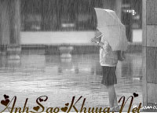

|
Khi anh quen cô, cô đã có ý trung nhân. Và vì yêu nên anh không muốn khuấy động cuộc sống riêng tư của cô. Anh chỉ âm thầm ở bên, lặng lẽ quan tâm, giống như một không gian vô hình vậy, luôn tồn tại xung quanh nhưng không gây cho ai bất cứ áp lực gì. Thoáng chốc ba năm trôi qua, tình yêu của cô dường như tiến triển rất thuận lợi. Cho đến khi anh cảm thấy không còn một chút hi vọng nữa thì bất ngờ cô và bạn trai chia tay. Khi đó, anh vừa xót xa cho cô, vừa khẽ thầm chúc mừng cho chính mình.  Trong những ngày tháng đó, cô luôn rơi vào trạng thái hụt hẫng, khủng hoảng trầm trọng. Anh chỉ lặng lẽ ở bên cô, quan tâm an ủi cô, và cũng rất thận trọng không sớm vội vàng thổ lộ tình yêu của mình. Anh vẫn kiên nhẫn đợi, anh tin rằng trên đời có những thứ tình cảm không cần nói bằng lời cũng có thể khiến người khác cảm nhận được. Cuối cùng sau gần một năm cố gắng, cô đã nhận lời đi ăn tối cùng anh. Đó là một buổi chiều trời mưa tầm tã, anh và cô cùng đi dưới một cái ô. Trên đường đi, anh đột nhiên rút ra một chiếc nhẫn và quỳ xuống đường cầu hôn với cô. Cô lặng đi trong bất ngờ rồi bật khóc. Thực ra trái tim cô cũng đã sớm rung động trước sự dịu dàng và ánh mắt ấm áp anh luôn dành cho cô mỗi khi cô tuyệt vọng hay khổ đau. Cô cũng sớm biết tình cảm anh dành cho mình nhưng không thể vội vàng đến với anh, cô cần có thời gian để trái tim được hàn gắn trở lại. Giờ đây, đứng trước một trái tim chân thành như thế, cô không còn lí do gì để từ chối nữa, cô mỉm cười hạnh phúc gật đầu. Anh vui mừng khôn xiết trân trọng đeo nhẫn cho cô. Chiếc nhẫn có vẻ hơi rộng so với ngón tay, cô hạnh phúc nép mình vào ngực anh... Đến nhà hàng, người phục vụ yêu cầu cô phải để ô ở trên giá bên ngoài cửa ra vào. Cô cẩn thận gấp ô đặt vào đúng chỗ quy định. Đến khi hai người ra về, mặt cô chợt tái đi, cô phát hiện thấy chiếc nhẫn trên tay đã rơi tự lúc nào không biết, cô đoán có lẽ trong lúc cô gập ô lại. Cô hốt hoảng chạy ra nơi để ô tìm, nhưng chiếc ô cũng không cánh mà bay. Cô cuống quít tìm kiếm xung quanh, thậm chí quỳ hẳn xuống chỗ bọn họ đã từng ăn cơm để tìm chiếc ô, nhưng không có một chút dấu vết gì. Anh thì không hiểu chuyện gì xảy ra nên chỉ biết chạy theo sau cô. Ra ngoài cửa anh phát hiện thấy chiếc ô của cô đã biến mất. Nhìn vẻ mặt thất thần của cô, trong phút chốc anh hiểu ra tất cả. Chiếc ô này là món quà mà người bạn trai trước đã tặng cho cô, hóa ra... cô vẫn không thể quên được người đó. Trái tim anh chợt trở nên lạnh giá. Tại sao cô có thể đùa giỡn với tình cảm của anh như thế? Tại sao lại nhận lời cầu hôn của anh trong khi vẫn nhớ đến người con trai khác? Anh nhìn cô một cách đầy giận dữ rồi bỏ đi không nói một lời. Ngày hôm sau anh lên cơ quan xin thôi việc và lặng lẽ đi đến một thành phố rất xa... Vài năm sau khi đã lập gia đình anh quyết định trở về nơi làm việc cũ. Thật trùng hợp, về đến nơi cũng vừa lúc anh nghe bạn bè nói ngày hôm sau là đám cưới của cô. Anh lập tức quyết định sẽ đưa vợ cùng đi đến dự đám cưới của cô, anh muốn cho cô biết dù không có cô anh vẫn có thể có một cuộc sống hạnh phúc như thế nào... Sau bữa tiệc, một người bạn đồng nghiệp thân của cô nhận ra anh liền lập tức kéo anh ra một chỗ trách móc: “Anh có biết chỉ vì một cái ô mà anh đã làm mất đi một người yêu anh không?”. Anh sững lại trong giây lát không hiểu có chuyện gì xảy ra thì đồng nghiệp cô lại nói tiếp: “Ngày hôm đó, cô ấy hốt hoảng muốn tìm cái ô là vì cô ấy đã nghĩ rằng chiếc nhẫn anh tặng có thể do cô ấy không cẩn thận đánh rơi vào trong đó. Cô ấy sợ sẽ làm anh buồn nên mới thục mạng đi tìm chiếc ô là vì thế. Anh thật quá hồ đồ...”. Anh ngẩn người ú ớ nói: “Vậy tại sao lúc đó cô ấy không giải thích ngay với tôi?”. Người đồng sự cười một cách buồn bã: “Anh yêu cô ấy bao nhiêu năm mà tại sao vẫn không hiểu cô ấy? Cô ấy làm sao có thể là loại người vẫn yêu người này mà lại nhận lời cầu hôn của người khác? Chỉ trách anh đã không tin cô ấy, cũng chính là chẳng có niềm tin với chính mình. Với một người như vậy cô ấy có còn muốn tin tưởng anh nữa không?”. Những lời người đồng sự nói như một nhát dao cứa vào lòng anh. Giờ đây mọi chuyện có hối hận thì cũng đã quá muộn. Cuối cùng anh xót xa nhận ra rằng: Năm đó anh không chỉ mất đi một chiếc ô bình thường, mà đã mất đi hạnh phúc cả một đời của chính mình. Nguồn: ASK sưu tầm || Tham gia bình luận TẠI ĐÂY || Bạn vô tình đọc ở đâu đó một câu chuyện tình cảm động hoặc một câu chuyện do chính bạn viết ra. Hãy đến với chúng tôi để cùng nhau chia sẻ: wWw.anhsaokhuya.net
Chung tay vì một thế giới online lành mạnh !
|